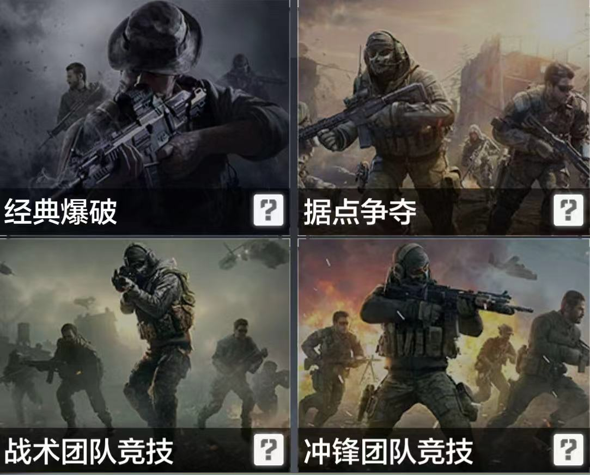
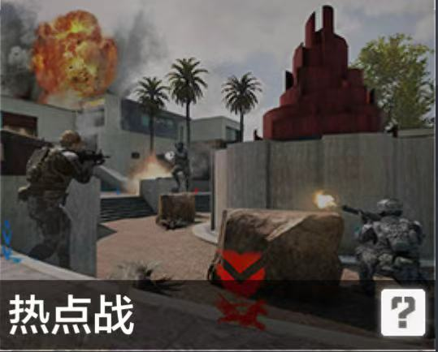
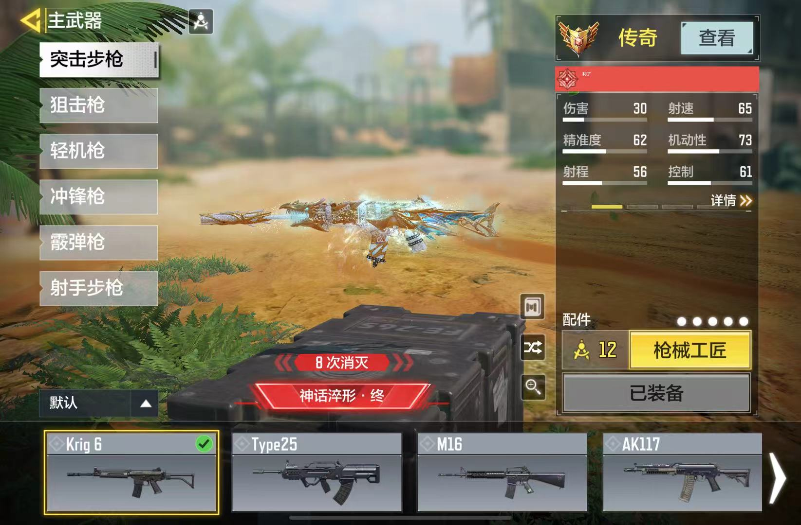
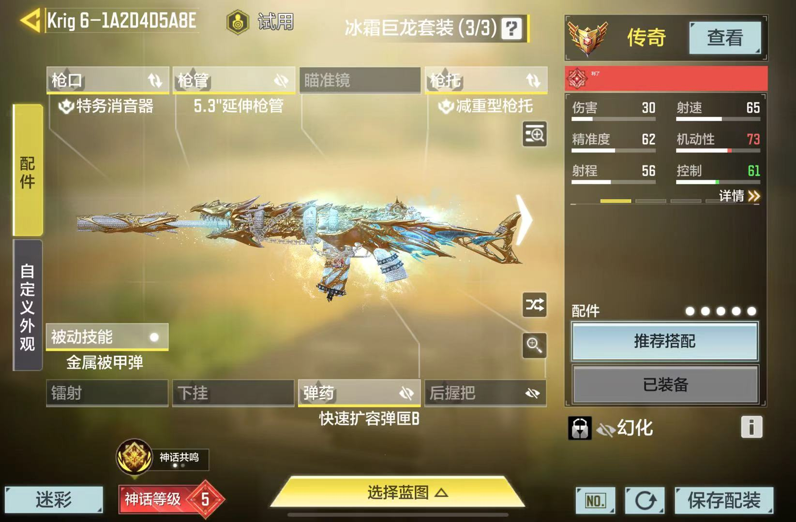

经典爆破模式
回合开始时，进攻方携带一颗炸药，需抵达地图上两个目标点之一进行安放，并等待炸药引爆摧毁目标；防守方则要阻止进攻方安放炸药，回合内双方阵亡后，都无法重生，所以防守方需击败所有进攻方人员，或者拆除炸药，才可获得胜利。
据点争夺模式
游戏开始时，双方阵营从地图两端各自的出生点出生。玩家阵亡后，从距离已占领点位或队友位置较近的出生点重生。
已经占领的点位，会给占领方不断贡献分数。在规定时间内，一方阵营积累到目标分数后获胜。
个人竞技模式
游戏开始时，所有玩家分别出生在地图的随机区域。每个人通过击败其他对手获得积分。当玩家被击败后，从距离其他玩家最远的位置重生。在规定时间内，先达到目标分数的玩家获得第一名，其他玩家按分数高低排位。
冲锋团队竞技
游戏开始时，双方阵营从地图两端各自出生点出生，阵亡后依然从各自阵营出生点重生，双方通过击败敌人获得积分，在规定时间内，累计达到目标分数的队伍获得胜利。
战术团队竞技
游戏开始时，双方阵营从地图两端各自出生点出生，与冲锋团队竞技不一样的是，阵亡后，玩家会从距离队友较近的位置重生，通过击败敌人获得积分，在规定时间内，累计达到目标分数的队伍获得胜利。


武器装备
游戏中共有冲锋枪、冲锋手枪、突击步枪、狙击步枪、轻机枪、霰弹枪、手枪及发射器等类型的枪械，枪械可以携带两把且不区分类型，携带两把冲锋枪换着用也没有问题。每类枪械都有多种枪支可以拾取，它们的射速、射程、火力、后坐力、弹匣容量以及可装配配件都不尽相同，可以说武器的选择余地非常大。
主武器有突击步枪、冲锋枪、狙击枪、轻机枪、射手步枪、霰弹枪等六种种类，副武器有手枪、发射器、近战武器等三种种类，所有武器均可以自定义选择安装配件（最多5个）。


主页
游戏历史
玩法介绍
游戏评价